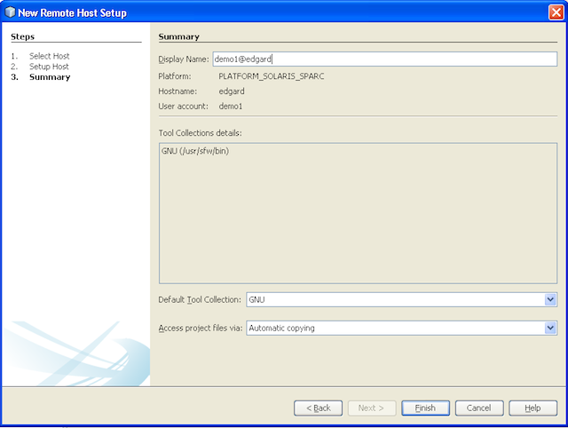

Apache NetBeans
Apache NetBeansLatest release
Desenvolvimento Remoto C/C++ - Tutorial do NetBeans IDE
| This tutorial needs a review. You can open a JIRA issue, or edit it in GitHub following these contribution guidelines. |
Março de 2014 [Número da revisão: V8.0-1]
Este documento descreve como usar os recursos de desenvolvimento remoto do NetBeans IDE com projetos C/C++/Fortran.
Requisitos
Para seguir este tutorial, você precisa do software a seguir.
| Software | Versão Necessária |
|---|---|
NetBeans IDE (incluindo o suporte ao C/C++) |
|
Java Development Kit (JDK) |
Consulte as Instruções de Instalação do NetBeans IDE e a + Configuração do NetBeans IDE para o C/C+/Fortran para obter informações sobre o download e a instalação do software necessário.
Introdução
Este tutorial demonstra como utilizar o desenvolvimento remoto de projetos C/C++.
Alguma vez já desejou desenvolver uma aplicação Solaris ou Linux no seu laptop executando o Windows 7 ou o Mac OS X? Ou testar sua aplicação em sistemas operacionais diferentes sem sair do IDE? Ou simplesmente compilar aplicações grandes em servidores rápidos com vários núcleos em vez de compilar na sua estação de trabalho habitual? A resposta para todas estas necessidades é a funcionalidade de desenvolvimento remoto do NetBeans IDE.
Conceitos de Desenvolvimento Remoto
Ao executar o desenvolvimento remoto, você executa o NetBeans IDE no sistema do cliente e pode criar projetos, editar arquivos e utilizar as funcionalidades de assistência aos códigos da mesma forma que faz em projetos locais. Mas quando você cria, executa ou depura seu projeto, o processo é executado no servidor Solaris ou Linux remoto com a saída e a entrada transferidas para o sistema do cliente. Você não deve detectar diferenças no fluxo de trabalho entre o desenvolvimento local e remoto após a configuração do host de compilação remoto.
O IDE suporta diferentes modos de desenvolvimento remoto, que são descritos nos Modos de Desenvolvimento Remoto C/C++. Você pode determina como deseja desenvolvê-los no host remoto.
Requisitos de Desenvolvimento Remoto
Os elementos necessários para permitir o uso de um host remoto para a execução das ferramentas são:
-
O sistema do cliente local em que o IDE está instalado deve estar executando o Windows, Mac OS, Oracle Solaris 10, Oracle Solaris 11 ou Linux.
-
O host remoto deve estar executando o Oracle Solaris 10, Oracle Solaris 11 ou Linux.
-
O sistema do cliente local e o sistema remoto devem ter acesso aos arquivos do projeto por meio de recursos compartilhados ou do uso do protocolo Secure Shell (SSH).
-
O cliente deve poder se conectar a um sistema remoto por meio de um SSH (Secure Shell) mesmo se os arquivos do projeto estiverem em pastas compartilhadas.
-
O sistema remoto deve ter acesso a uma coleção de ferramentas suportadas.
-
O sistema remoto deve possuir as bibliotecas do sistema de suporte que seu projeto necessita para ativar a assistência ao código.
Compartilhando códigos-fonte
Tanto o sistema do cliente como o servidor remoto devem ter conhecimento dos arquivos de origem. Os arquivos de origem podem estar em um caminho de rede compartilhada ou podem ser copiados de forma segura pelo IDE a partir do sistema local para o sistema remoto. Consulte Configurando o Sistema para obter mais detalhes sobre como configurar pastas compartilhadas para diferentes sistemas.
Conectividade
Todas as transferências de dados entre o cliente e o servidor são feitas usando o protocolo (SSH) Secure Shell. O SSH é um protocolo comum para comunicações seguras entre dois dispositivos de rede. Seu servidor deve ter o servidor SSH instalado e a a conexão SSH entre o sistema do cliente e o servidor deve ser permitida.
Coleções de Ferramentas
O IDE deve estar ativado a encontrar uma coleção de ferramenta suportada no host remoto: Coleção do Compilador GNU, Sun Studio ou Oracle Solaris Studio. As ferramentas executáveis devem estar no caminho da conta do usuário utilizada para conectar ao host remoto, de forma que o IDE possa localizar facilmente tais ferramentas. Isto é verdadeiro principalmente em caso de as ferramentas estarem instaladas em uma localização sem ser a default.
Assistência ao Código
Para uma operação correta das funcionalidades do editor, como autocompletar código e o realce semântico, a janela Classes, e outros, o projeto deve ser utilizado no ambiente apropriado, o que significa que o sistema inclui definições macro, plataforma, etc. Todas estas informações são reunidas no servidor remoto e armazenadas localmente no sistema do cliente, de forma que, ao editar localmente, a assistência ao código funcionará mesmo quando o projeto estiver configurado para utilizar um host de compilação remoto.
Configurando o Sistema
O servidor Linux ou Solaris remoto deve permitir comunicação por meio do protocolo SSH do cliente no qual você está executando o IDE. Se quiser utilizar o compartilhamento de arquivos em vez de permitir que o IDE copie os arquivos para o servidor remoto, o compartilhamento de arquivos de ambos os sistemas deve ser configurado na rede.
Protocolo SSH
O servidor SSH geralmente está incluído nos sistemas operacionais Linux e Solaris e, na maioria dos casos, é executado por default. Caso não esteja, é possível encontrar informações sobre a instalação e o gerenciamento do SSH em http://en.wikipedia.org/wiki/Secure_Shell
O IDE fornece seu próprio cliente ssh, de forma que não é necessário instalar o cliente ssh no computador local.
Uma conexão SSH deve ser permitida entre o cliente e os sistemas do servidor, o que geralmente significa que a porta 22 deve estar aberta no servidor. Pode ser necessário o acesso de raiz ou a ajuda do administrador de sistema caso a porta 22 esteja desativada.
O SSH deve estar ativado entre os sistemas mesmo que você não esteja usando a opção Cópia Automática ou SFTP para transferir os arquivos de projetos para o servidor remoto.
Compartilhando códigos-fonte
Caso você ainda não tenha o compartilhamento de arquivos configurado entre seu sistema Windows e um host remoto Unix para outros usos, será bem mais simples utilizar a opção Cópia Automática ou SFTP em vez do compartilhamento de arquivos para projetos pequenos ou médios. Se estiver trabalhando em um projeto grande com milhares de arquivos que fazem parte da construção, o compartilhamento é melhor porque a cópia pode demorar muito.
Para a configuração do Windows para o UNIX®, há duas principais formas de compartilhamento de códigos-fonte:
-
Servidor Samba no sistema UNIX
-
Serviços do Windows para pacote do UNIX (SFU) instalado no sistema Windows
Organizando Códigos-fonte Usando Samba ou SMB
Um servidor Samba (versão de origem aberta de SMB) permite que um usuário Windows mapeie as pastas NFS compartilhadas como unidades de rede do Windows. O pacote do Samba ou de seu equivalente SMB ou CIFS está incluído na maioria das distribuições dos sistemas operacionais Linux e Solaris. Caso o Samba não esteja incluído na sua distribuição, é possível fazer seu download em www.samba.org
Caso possua o acesso privilegiado no seu servidor, você mesmo pode configurar o Samba seguindo as instruções nos links seguintes. Caso contrário, você terá que contatar o administrador do sistema.
-
Oracle Solaris 11: https://blogs.oracle.com/paulie/entry/cifs_sharing_on_solaris_11 para obter informações breves. Consulte Managing SMB File Sharing and Windows Interoperability in Oracle Solaris 11.1 para obter informações completas.
-
Oracle Solaris 10: http://blogs.oracle.com/timthomas/entry/enabling_and_configuring_samba_as
Depois de iniciar o Samba, é possível mapear as pastas do servidor UNIX da mesma forma que as pastas do Windows.
Windows Services For UNIX (SFU)
Outra opção é o Windows Services For UNIX, um conjunto de utilitários fornecido pela Microsoft para acessar os sistemas de arquivos NFS a partir do Windows. É possível fazer download deles no Centro de Download da Microsoft +] e ler a documentação na página link:http://technet.microsoft.com/en-us/library/bb496506.aspx[+Windows Services for Unix.
O pacote SFU não está disponível para os usuários do Windows Vista ou do Windows 7. O Windows Vista e o Windows 7 Enterprise e Ultimate Editions incluem os componentes do Services for Unix, renomeados para as aplicações com base no Subsystem for UNIX (SUA), e o Client for NFS v3. Para obter mais informações, consulte http://en.wikipedia.org/wiki/Microsoft_Windows_Services_for_UNIX
Configuração do Mac OS X
O Mac OS X inclui suporte para conexão aos servidores Samba. O Mac OS X também pode montar NFS compartilhados de um servidor.
É possível utilizar Finder > Ir > Estabelecer Conexão com o Servidor e inserir um endereço do servidor.
Para conectar aos servidores SMB/CIFS (Windows) e às pastas compartilhadas, insira o endereço do servidor em um destes forms:
`smb://_DNSname/sharename_
smb://_IPaddress/sharename_`Será solicitado inserir o nome do usuário e a senha para a pasta compartilhada. Para mais informações, consulte Como Estabelecer Conexão ao Compartilhamento de Arquivos do Windows (SMB) em uma base de conhecimento da Apple.
Para conectar ao servidor NFS, digite o nome e o caminho do servidor para as pastas compartilhadas do NFS em um destes forms:
`nfs://_servername/path/to/share/_
nfs://_IPaddress/path/to/share_`Para mais informações, consulte Uso do Finder para Montar Exportações NFS na base de conhecimento da Apple.
Não será solicitado inserir o nome do usuário e a senha, mas será verificada a autorização contra seu UID do Mac. O UID é um inteiro exclusivo designado para o nome de usuário em sistemas operacionais similares ao Unix, como o Max OS X, o Solaris e o Linux. Para utilizar o NFS, o UID do Mac deve ser o mesmo que o UID da sua conta no servidor.
Configuração UNIX-UNIX
Para compartilhamento de arquivos entre os sistemas Solaris ou Linux, não é necessária nenhuma configuração especial. Basta que você compartilhe uma pasta de um dos sistemas ou você pode utilizar o diretório home caso este esteja montado em um servidor de arquivo de rede e esteja acessível de ambos os sistemas.
Mapeamento de Caminho
Quando você utiliza o modelo de fontes compartilhadas, pode ser necessário mapear a localização de códigos-fonte no host local para o caminho utilizado no host remoto para obter os códigos-fonte.
Por exemplo, observe esta configuração:
-
Servidor Solaris
solservercom a pasta compartilhada/export/pub -
Estação de trabalho com Windows XP em execução, com o SFU instalado e o caminho
\\solserver\export\pubmontado como unidadeP: -
Arquivos de origem do projeto localizados em
solserverna pasta/export/pub/myproject
Neste caso, do ponto de vista do servidor, os arquivos de origem estão localizados no /export/pub/myproject . Porém, do ponto de vista do cliente, a localização dos arquivos de origem é P:\myproject . É necessário permitir que o IDE saiba que estes caminhos estão mapeados:
/export/pub → P:\
Você pode editar as propriedades do host de compilação para definir os mapeamentos de caminho.
Se forem configurados os recursos compartilhados para os arquivos de origem antes de configurar o host remoto no NetBeans IDE, o IDE descobrirá automaticamente os mapeamentos dos caminhos necessários na maioria dos casos.
Configurando o IDE
No exemplo seguinte, o host do cliente é uma estação de trabalho que executa o Windows Vista. O host remoto chamado edgard é um servidor que executa o sistema operacional Oracle Solaris.
-
Abra a janela Serviços selecionando Janela > Serviços.
-
Clique com o botão direito no nó Hosts de Compilação C/C++ e selecione Adicionar Novo Host.
image::images/remotedev-add-host.png[]Na caixa de diálogo Nova Configuração de Host Remoto, o IDE descobre seus hosts de rede local. Os nomes de host são adicionados a uma tabela na caixa de diálogo e um indicador verde informa se estiverem em execução no servidor SSH.
-
Clique duas vezes no nome do servidor desejado, ou digite o nome do servidor diretamente no campo Nome do host. Clique em Próximo.

-
Na tela Configurar Host, digite o nome do usuário que você utiliza para efetuar o log-in no host remoto, e selecione um método de autenticação. Para este tutorial, selecione Senha e clique em Próximo.

Caso deseje utilizar as teclas ssh, será necessário configurá-las primeiro fora do IDE. Então, será possível especificar a localização para as teclas ssh no IDE, e utilizar as teclas para fazer a conexão ssh ao host de compilação remoto.
-
Após ter sido feita a conexão ao servidor, insira a senha na caixa de diálogo Autenticação.
-
Outra opção é clicar em Lembrar Senha para que o IDE seja criptografado e salve a senha no disco local, de forma que não seja necessário inseri-la cada vez que o IDE se conectar a um host remoto.
O IDE configura o host remoto e procura por coleções de ferramentas no host remoto.
-
Quando o host é configurado com êxito, uma página de resumo exibe informações sobre o host remoto: a plataforma, o nome da máquina, o nome de usuário utilizado para log-in e as coleções de ferramentas encontradas.

-
Na parte inferior da página de resumo são exibidas duas opções adicionais. Caso sejam encontradas mais de uma coleção de ferramentas, é possível selecionar uma das coleções para ser a Coleção de Ferramentas Default.
-
Para os arquivos do projeto de Acesso por meio da opção:
-
Selecione Cópia Automática se seu sistema de cliente e o host de compilação remota não tiverem acesso compartilhado aos arquivos do projeto. Quando você selecionar a opção Cópia Automática, os arquivos do projeto serão copiados no diretório home do servidor usando o comando sftp. Isso é conhecido como o desenvolvimento remoto simples.
-
Selecione compartilhamento do arquivo em nível de sistema se o cliente e o servidor tiverem acesso à mesma pasta. Isso é conhecido como desenvolvimento remoto compartilhado ou misto.
-
Selecione SFTP (somente no NetBeans 7.4 e 8.0) para usar o protocolo de transferência segura de arquivo a fim de copiar os arquivos do projeto no host remoto. Semelhante à Cópia Automática.
-
-
Clique em Finalizar para concluir o assistente.
-
Na janela Serviços, o novo host remoto é exibido sob o nó Hosts de Compilação C/C++. Expanda o nó para o novo host e deverá obter uma ou mais coleções de ferramentas na lista Coleções de Ferramentas.

Caso não esteja listada nenhuma coleção de ferramentas
Tente as tarefas a seguir se não visualizar nenhuma coleção de ferramenta no nó do host remoto.
-
No host remoto, adicione o diretório bin da coleção de ferramentas ao caminho do usuário no host. Caso não haja nenhuma coleção disponível no host remoto, será necessário instalar a coleção do compilador GNU ou o software do Sun Studio ou do Oracle Solaris Studio no host remoto.
-
Quando o caminho para as ferramentas executáveis estiver no caminho do usuário do host remoto, você pode tentar configurar novamente a coleção de ferramentas no sistema local. Clique com o botão direito no host na janela Serviços e selecione Restaurar Coleções de Ferramentas Default, para fazer com que o IDE tente encontrar novamente as coleções de ferramentas no host remoto.
-
Alternativamente, clique com o botão direito no host na janela Serviços e selecione Adicionar Coleção de Ferramentas para especificar ou procurar por um caminho para uma coleção de ferramentas no host remoto.
Quando você obtém uma coleção de ferramentas listada, a criação do host de compilação remoto está concluída.
Na próxima seção, tente o desenvolvimento remoto simples.
Construindo um Projeto Local em um Host Remoto
-
Crie um novo projeto de amostra selecionando Arquivo > Novo Projeto.
-
Expanda Amostras > C/C++ e selecione Bem-vindo. Clique em Próximo.
Este exemplo não utilizara as pastas compartilhadas, portanto podemos manter a localização sugerida para o projeto na pasta Projetos NetBeans, no diretório de usuário Windows, o qual não é compartilhado.
Caso queira utilizar os arquivos de origem compartilhados, certifique-se de que a Localização do Projeto especificada seja um caminho compartilhado com o servidor remoto.
-
Selecione o novo host remoto para o Host de Compilação. A lista Coleção de Ferramentas é atualizada para mostrar as ferramentas disponíveis no host remoto.

-
Clique em Finalizar para criar o projeto.
O projeto Welcome_1 é aberto na janela Projetos.
-
Coloque o cursor do mouse no nome do projeto na janela Projetos para ver se uma dica de ferramenta exibe a localização do projeto e o host remoto que está configurado para construção.
-
Clique no botão Construir na barra de ferramentas ou clique com o botão direito do mouse no nó do projeto Welcome_1 e escolha Construir. O projeto de amostra será construído remotamente no host do host de compilação selecionado.
-
Abra o arquivo do código-fonte
welcome.cc.
Na tela a seguir você pode ver se a assistência ao código está funcionando quando você pressionar Ctrl-Espaço com o cursor no símbolo argc .
A janela de Saída exibe o nome do host no qual a aplicação foi construída e que os compiladores remotos e os utilitários de execução foram utilizados para a construção. Os arquivos de projeto estão no diretório do usuário .netbeans/remote/ no host remoto.

Quase não há diferença no fluxo de trabalho depois da configuração de um host remoto. Você pode utilizar todas as funcionalidades do editor, construir, executar, testar e depurar como está acostumado a fazer localmente.
Iniciando uma Sessão do Terminal no Host Remoto
É possível iniciar a sessão terminal da secure shell dentro do IDE para conectar ao sistema remoto ou ao sistema local. Esta funcionalidade é conveniente principalmente nas plataformas Windows, as quais não suportam nativamente a SSH.
-
Na margem esquerda da janela de Saída, clique no ícone do terminal.
O IDE abre uma guia Terminal no diretório de trabalho do projeto atual, se for local ou remoto. Se o projeto estiver usando um host de compilação remota e você já estiver conectado por meio do IDE, você não precisará efetuar log-in novamente.

É possível utilizar o terminal interno IDE para fazer qualquer coisa que feita geralmente em uma sessão SSH para um host remoto.
Você pode criar novas sessões do terminal local ou remoto usando os ícones na margem esquerda da guia Terminal ou usando a opção de menu Janela > Saída > Terminal.
Dicas de Desenvolvimento Remoto
-
É possível alternar o host de compilação para um projeto clicando com o botão direito do mouse no nó do projeto e selecionando Definir Host de Compilação.

-
É possível alterar as propriedades de um host de compilação remoto após uma configuração inicial, clicando com o botão direito na máquina na janela Serviços e selecionando Propriedades.
-
Caso esteja usando um host remoto para construir e executar uma aplicação com uma UI gráfica, é possível selecionar Ativar o Encaminhamento X11 nas propriedades das máquinas de forma que a UI possa ser vista no seu sistema local enquanto é executada no host remoto.
-
Caso esteja construindo o projeto remotamente ao compilar bibliotecas ou gerar outros arquivos adicionais ao produto de construção principal, o IDE solicitará o download dos arquivos para o sistema local. É possível selecionar quais os arquivos alterados devem ser submetidos a download.
-
Você pode trabalhar em projetos no modo totalmente remoto no qual o projeto e as ferramentas estão no host remoto. Consulte a ajuda integrada do IDE ou o artigo Modos de Desenvolvimento Remoto de C/C++ para obter mais informações.
-
É possível acessar o host remoto e as informações sobre ferramentas a partir do menu Ferramentas do IDE, assim como a janela Serviços. Selecione Ferramentas > Opções > C/C++ > Construir Ferramentas e clique no botão Editar ao lado da lista Host de Compilação.
-
Ao utilizar o compartilhamento de arquivos para os arquivos do projeto, você pode mapear o local e os caminhos remotos para a pasta compartilhada usando a funcionalidade Mapeamento do Caminho. Você pode definir o mapeamento executando uma das seguintes ações:
-
Na janela Serviços, abra os Hosts de Compilação do C/C++, clique com o botão direito do mouse no nome do host e selecione Mapeador de Caminho.
-
No menu Ferramentas do IDE, selecione Opções > C/C++ > Ferramentas de Construção, clique no botão Editar, selecione o host remoto e clique no botão Mapeamento de Caminho.
Para Obter Mais Informações
Consulte os seguintes locais para obter mais informações:
-
O menu Ajuda do IDE oferece acesso a muitas informações sobre o uso do IDE.
-
O artigo Modos de Desenvolvimento Remoto C/C++ descreve diferentes formas de usar o desenvolvimento remoto
-
A link:https://netbeans.org/kb/trails/cnd.html[+Trilha de Aprendizado C/C+] oferece diversos artigos e tutoriais para o desenvolvimento em C/C no IDE.
link:mailto:users@cnd.netbeans.org?subject=Feedback:%20C/C+%20Remote%20Development%20-%20NetBeans%20IDE%208.0%20Tutorial[+Enviar Feedback neste Tutorial]